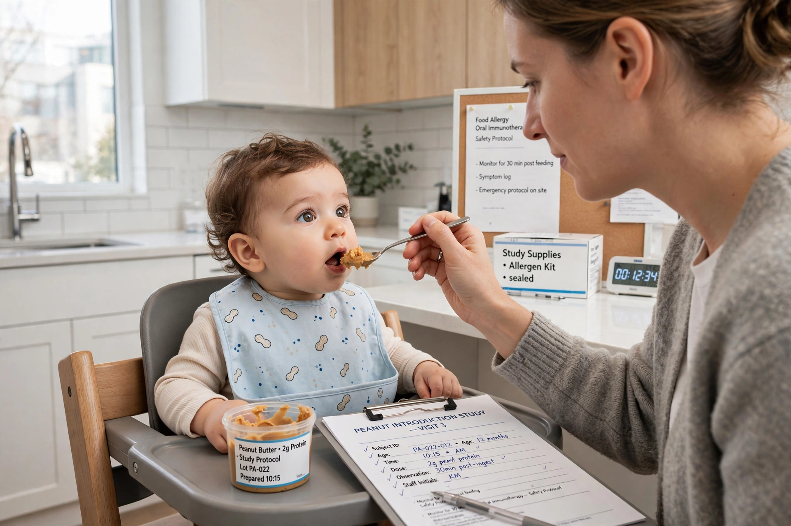

LEAP study
| LEAP study | |
|---|---|
 | |
| Full name | Learning Early about Peanut Allergy |
| Design | Randomised controlled trial |
| Participants | 640 infants at high risk of peanut allergy |
| Published | New England Journal of Medicine, 2015 |
| Lead investigator | Gideon Lack, King's College London |
The LEAP study (Learning Early about Peanut Allergy) was a randomised controlled trial that investigated whether introducing peanut into the diet of high-risk infants early in life could prevent peanut allergy. Published in the New England Journal of Medicine in 2015, the study found that early peanut consumption reduced the development of peanut allergy by about 80 per cent, reversing the then-standard advice that infants should avoid allergenic foods.
Background
Peanut allergy prevalence in Western countries rose sharply in the late 20th and early 21st centuries, and guidelines had recommended delaying introduction of peanut until age three. Gideon Lack proposed the "dual allergen exposure hypothesis": exposure to food allergens through broken skin (for example in eczema) promotes allergy, whereas early exposure through the gut promotes tolerance. The observation that peanut allergy was about ten times less common among Israeli children — who commonly eat the peanut snack Bamba in infancy — than among Jewish children in the UK supported the idea.
Design and results
The trial enrolled 640 infants aged 4–11 months who were at high risk because they had severe eczema, egg allergy, or both. Participants were stratified by skin-prick test reactivity to peanut and randomised either to consume peanut-containing foods regularly (at least 6 g of peanut protein per week) or to avoid peanut entirely, until age five.
At age five, peanut allergy was present in 17.2 per cent of the avoidance group but only 3.2 per cent of the consumption group — an 81 per cent relative reduction. The effect was seen in both skin-test strata, and the intervention was safe, with no excess of serious adverse events. A follow-up study (LEAP-On, 2016) showed that the protection persisted after a further year in which children in the consumption group avoided peanut, indicating durable tolerance rather than mere desensitisation.
Impact
LEAP transformed infant-feeding guidance worldwide. In 2017 the US National Institute of Allergy and Infectious Diseases issued guidelines recommending early introduction of peanut for high-risk infants, with similar changes by European and Australian bodies. Subsequent trials extended the early-introduction approach to other allergens such as egg. The study is widely regarded as a landmark in allergy prevention and an example of a clinical trial overturning established practice.
See also
- Peanut allergy
- Food allergy